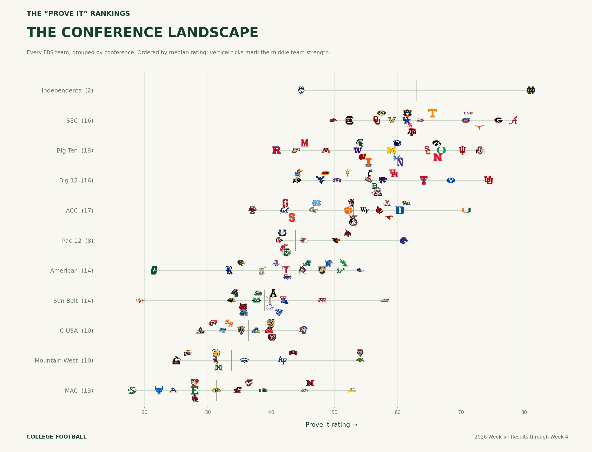
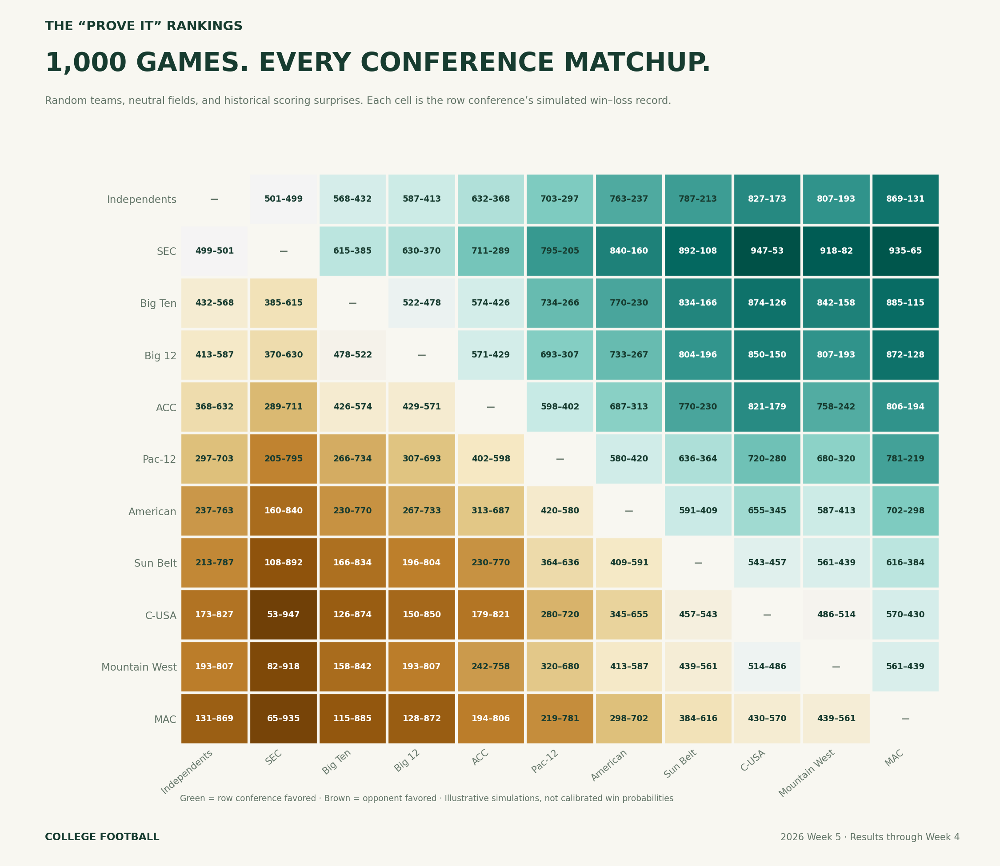
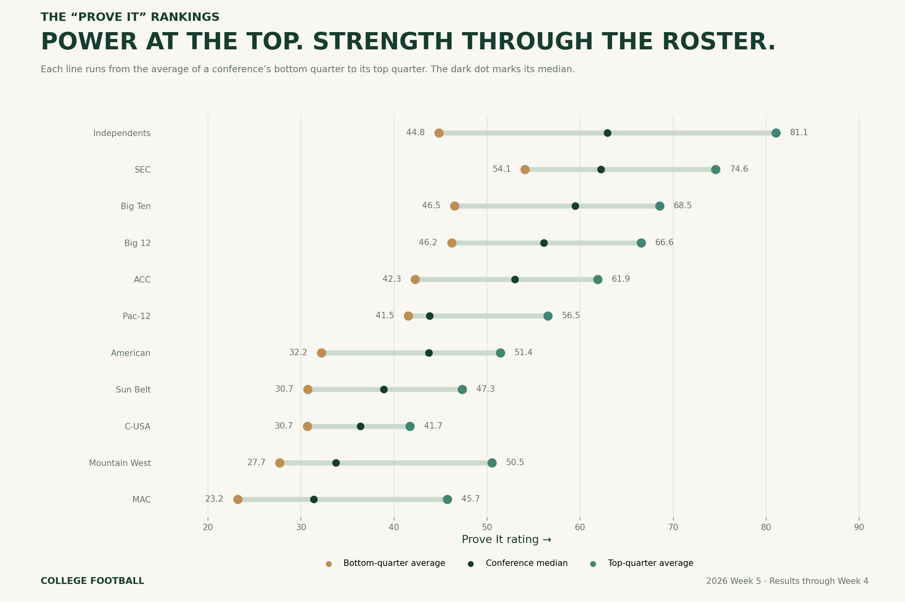

Conference previews
2026 Week 5 · Local files ·
Methods and assumptions
Conference distributions — every FBS team

PNG
·
SVG
1,000 games per conference matchup

PNG
·
SVG
Conference strength and depth

PNG
·
SVG